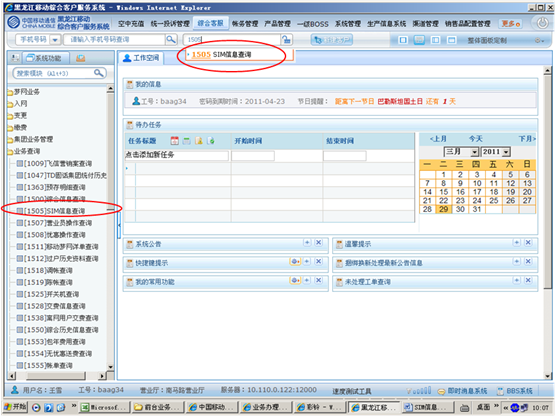
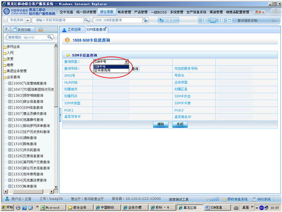
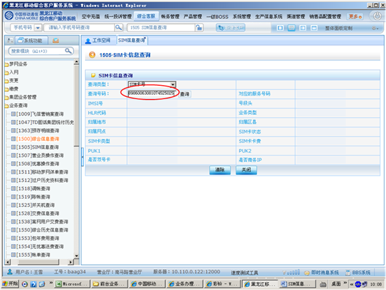
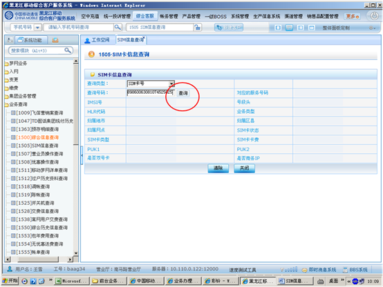
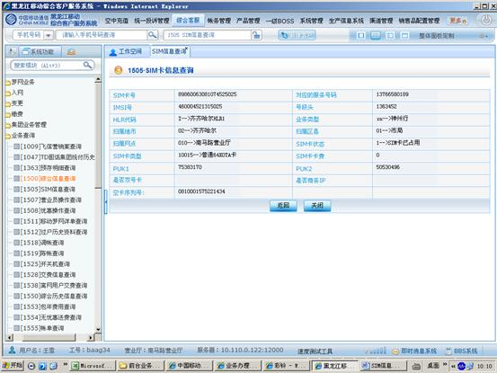

1、进入方式
点击综合客服-业务查询-SIM信息查询，或在“快速转入”处输入代码1505SIM信息查询，点击“回车”确定。
2、界面形式及操作步骤说明
（1）点击综合客服-业务查询-SIM信息查询，或在“快速转入”处输入代码1505SIM信息查询，点击“回车”确定。

（2）根据SIM卡类型，选择“查询类型”（实卡选择“SIM卡号”，空卡选择“空卡序列号”）。

（3）输入“查询号码”。

（4）点击“查询”。

（5）直接查询即可，可查询：“HLR代码”、“业务类型”、“归属地市”、“归属区县”、“归属网点”、“SIM卡状态”、“SIM卡类型”、“PUK1”、“PUK2”及“空卡序列号”等SIM卡信息。
